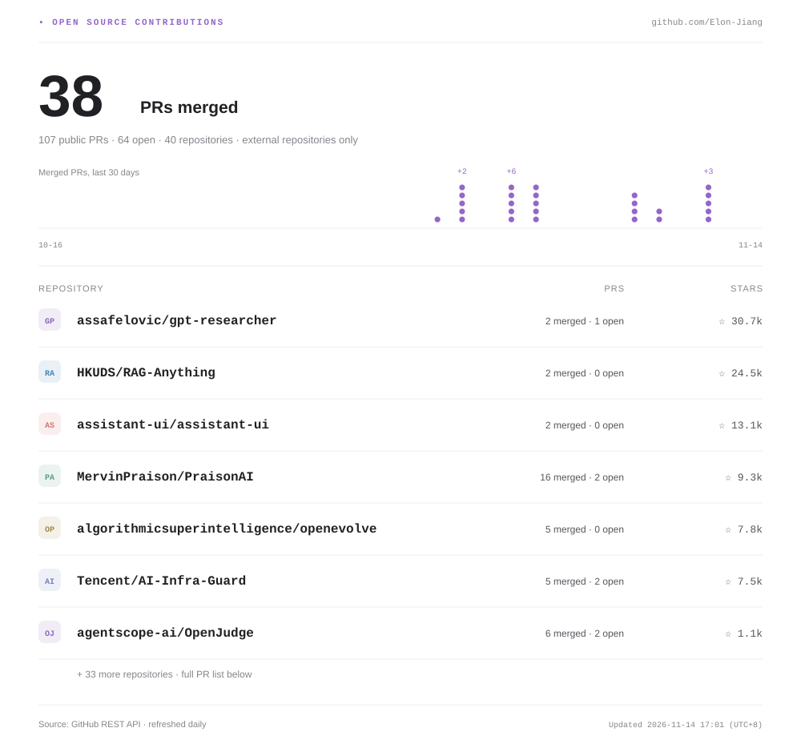

<!doctype html>
<html lang="zh-CN"><meta charset="utf-8"><meta name="viewport" content="width=device-width,initial-scale=1">
<title>Elon Jiang · GitHub 主页预览</title>
<style>
:root{color-scheme:light;--bg:#fff;--fg:#202124;--muted:#7c7f85;--line:#e9e9ed;--soft:#f7f7f9;--accent:#9565c9}*{box-sizing:border-box}body{margin:0;background:var(--bg);color:var(--fg);font:15px 'PingFang SC','Microsoft YaHei',sans-serif}body.dark{color-scheme:dark;--bg:#0d1117;--fg:#e6edf3;--muted:#89929e;--line:#252c36;--soft:#161b22;--accent:#ba93ed}a{color:inherit;text-decoration:none}a:hover{color:var(--accent)}.toolbar{height:65px;display:flex;align-items:center;justify-content:space-between;padding:0 34px;border-bottom:1px solid var(--line);font-size:13px;color:var(--muted)}.brand{display:flex;align-items:center;gap:12px;color:var(--fg);font-weight:600}.mark{width:24px;height:24px;background:var(--fg);color:var(--bg);border-radius:50%;display:grid;place-items:center;font:13px Georgia}.controls{display:flex;align-items:center;gap:14px}button{border:1px solid var(--line);background:var(--bg);color:var(--fg);padding:7px 14px;border-radius:7px;cursor:pointer}button[aria-pressed=true]{border-color:var(--accent);color:var(--accent)}.layout{max-width:1330px;margin:44px auto 80px;display:grid;grid-template-columns:290px minmax(0,1fr);gap:38px;padding:0 28px}.sidebar{padding:0 10px}.avatar{display:block;width:100%;aspect-ratio:1;border-radius:50%;object-fit:cover;border:1px solid var(--line)}h1{font-size:25px;margin:22px 0 2px;letter-spacing:-.5px}.handle{font-size:20px;font-weight:300;color:var(--muted);margin-bottom:25px}.followers{font-size:13px;color:var(--muted)}.profile-link{display:block;margin-top:20px;font-size:13px;overflow-wrap:anywhere}.preview-label{margin-top:26px;padding-top:18px;border-top:1px solid var(--line);font-size:12px;line-height:1.8;color:var(--muted)}.readme{min-width:0;border:1px solid var(--line);border-radius:9px;overflow:hidden}.file-label{padding:14px 25px;border-bottom:1px solid var(--line);font:12px 'SFMono-Regular',Consolas,monospace;color:var(--muted)}.cards{padding:16px 18px 26px}.card{display:block;width:100%;height:auto}.footnote{font-size:12px;color:var(--muted);line-height:1.8;margin:16px 40px}.footnote b{color:var(--fg);font-weight:500}details{margin:24px 40px 10px;font-size:13px}summary{cursor:pointer;color:var(--accent);margin-bottom:14px}.pr{display:flex;justify-content:space-between;gap:16px;padding:12px 0;border-bottom:1px solid var(--line);font-size:12px}.pr small{white-space:nowrap;color:var(--muted)}.pr b{font-weight:400;color:var(--muted)}@media(max-width:760px){.toolbar{padding:0 16px}.controls>a{display:none}.layout{display:block;padding:0 12px;margin:24px auto}.sidebar{display:grid;grid-template-columns:64px 1fr;column-gap:16px;padding:0 10px;margin-bottom:22px}.avatar{width:64px;grid-row:1/3}h1{margin:3px 0 0;font-size:21px}.handle{font-size:16px;margin:0}.followers,.profile-link,.preview-label{display:none}.cards{padding:8px 0 20px}.file-label{padding:12px 16px}.footnote{margin:12px 18px}details{margin:20px 18px}.toolbar .brand{font-size:12px}}
</style>
<header class="toolbar"><a class="brand" href="https://github.com/Elon-Jiang"><span class="mark">e</span>Elon-Jiang / 主页预览</a><div class="controls"><button id="light" aria-pressed="true">浅色</button><button id="dark" aria-pressed="false">深色</button><a href="https://github.com/Elon-Jiang">查看公开主页 ↗</a></div></header>
<main class="layout"><aside class="sidebar"><h1>Elon-Jiang</h1><div class="handle">Elon-Jiang</div><div class="followers">1 followers · 1 following</div><a class="profile-link" href="https://github.com/Elon-Jiang">↗ github.com/Elon-Jiang</a><div class="preview-label">个人主页效果预览<br>右侧内容将显示在 GitHub 主页 README 中。</div></aside>
<section class="readme"><div class="file-label">Elon-Jiang / README.md</div><div class="cards"><p class="footnote"><b>64 个公开 PR · 24 已合并 · 37 待合并</b><br>仅统计提给他人仓库的公开 PR。Star 数属于所贡献的项目。</p><details><summary>查看全部 PR 与贡献仓库</summary><a class="pr" href="https://github.com/run-llama/llama_index/pull/24065"><span>run-llama/llama_index <b>#24065</b></span><small>待合并</small></a><a class="pr" href="https://github.com/run-llama/llama_index/pull/23976"><span>run-llama/llama_index <b>#23976</b></span><small>待合并</small></a><a class="pr" href="https://github.com/langchain-ai/deepagents/pull/7560"><span>langchain-ai/deepagents <b>#7560</b></span><small>关闭未合并</small></a><a class="pr" href="https://github.com/MervinPraison/PraisonAI/pull/6199"><span>MervinPraison/PraisonAI <b>#6199</b></span><small>已合并</small></a><a class="pr" href="https://github.com/MervinPraison/PraisonAI/pull/6198"><span>MervinPraison/PraisonAI <b>#6198</b></span><small>已合并</small></a><a class="pr" href="https://github.com/MervinPraison/PraisonAI/pull/6197"><span>MervinPraison/PraisonAI <b>#6197</b></span><small>已合并</small></a><a class="pr" href="https://github.com/MervinPraison/PraisonAI/pull/6196"><span>MervinPraison/PraisonAI <b>#6196</b></span><small>已合并</small></a><a class="pr" href="https://github.com/MervinPraison/PraisonAI/pull/6195"><span>MervinPraison/PraisonAI <b>#6195</b></span><small>已合并</small></a><a class="pr" href="https://github.com/MervinPraison/PraisonAI/pull/6194"><span>MervinPraison/PraisonAI <b>#6194</b></span><small>已合并</small></a><a class="pr" href="https://github.com/MervinPraison/PraisonAI/pull/6193"><span>MervinPraison/PraisonAI <b>#6193</b></span><small>已合并</small></a><a class="pr" href="https://github.com/MervinPraison/PraisonAI/pull/6192"><span>MervinPraison/PraisonAI <b>#6192</b></span><small>待合并</small></a><a class="pr" href="https://github.com/MervinPraison/PraisonAI/pull/6191"><span>MervinPraison/PraisonAI <b>#6191</b></span><small>已合并</small></a><a class="pr" href="https://github.com/MervinPraison/PraisonAI/pull/6190"><span>MervinPraison/PraisonAI <b>#6190</b></span><small>待合并</small></a><a class="pr" href="https://github.com/MervinPraison/PraisonAI/pull/6188"><span>MervinPraison/PraisonAI <b>#6188</b></span><small>已合并</small></a><a class="pr" href="https://github.com/MervinPraison/PraisonAI/pull/6186"><span>MervinPraison/PraisonAI <b>#6186</b></span><small>已合并</small></a><a class="pr" href="https://github.com/genkit-ai/genkit/pull/7000"><span>genkit-ai/genkit <b>#7000</b></span><small>待合并</small></a><a class="pr" href="https://github.com/genkit-ai/genkit/pull/6999"><span>genkit-ai/genkit <b>#6999</b></span><small>待合并</small></a><a class="pr" href="https://github.com/algorithmicsuperintelligence/openevolve/pull/578"><span>algorithmicsuperintelligence/openevolve <b>#578</b></span><small>已合并</small></a><a class="pr" href="https://github.com/algorithmicsuperintelligence/openevolve/pull/577"><span>algorithmicsuperintelligence/openevolve <b>#577</b></span><small>已合并</small></a><a class="pr" href="https://github.com/algorithmicsuperintelligence/openevolve/pull/576"><span>algorithmicsuperintelligence/openevolve <b>#576</b></span><small>已合并</small></a><a class="pr" href="https://github.com/algorithmicsuperintelligence/openevolve/pull/575"><span>algorithmicsuperintelligence/openevolve <b>#575</b></span><small>已合并</small></a><a class="pr" href="https://github.com/MervinPraison/PraisonAI/pull/6184"><span>MervinPraison/PraisonAI <b>#6184</b></span><small>已合并</small></a><a class="pr" href="https://github.com/MervinPraison/PraisonAI/pull/6183"><span>MervinPraison/PraisonAI <b>#6183</b></span><small>已合并</small></a><a class="pr" href="https://github.com/MervinPraison/PraisonAI/pull/6180"><span>MervinPraison/PraisonAI <b>#6180</b></span><small>已合并</small></a><a class="pr" href="https://github.com/genkit-ai/genkit/pull/6998"><span>genkit-ai/genkit <b>#6998</b></span><small>待合并</small></a><a class="pr" href="https://github.com/MervinPraison/PraisonAI/pull/6178"><span>MervinPraison/PraisonAI <b>#6178</b></span><small>已合并</small></a><a class="pr" href="https://github.com/assafelovic/gpt-researcher/pull/2252"><span>assafelovic/gpt-researcher <b>#2252</b></span><small>待合并</small></a><a class="pr" href="https://github.com/genkit-ai/genkit/pull/6996"><span>genkit-ai/genkit <b>#6996</b></span><small>待合并</small></a><a class="pr" href="https://github.com/genkit-ai/genkit/pull/6995"><span>genkit-ai/genkit <b>#6995</b></span><small>待合并</small></a><a class="pr" href="https://github.com/simular-ai/Agent-S/pull/253"><span>simular-ai/Agent-S <b>#253</b></span><small>待合并</small></a><a class="pr" href="https://github.com/NevaMind-AI/memU/pull/775"><span>NevaMind-AI/memU <b>#775</b></span><small>待合并</small></a><a class="pr" href="https://github.com/genkit-ai/genkit/pull/6992"><span>genkit-ai/genkit <b>#6992</b></span><small>待合并</small></a><a class="pr" href="https://github.com/genkit-ai/genkit/pull/6991"><span>genkit-ai/genkit <b>#6991</b></span><small>待合并</small></a><a class="pr" href="https://github.com/assafelovic/gpt-researcher/pull/2250"><span>assafelovic/gpt-researcher <b>#2250</b></span><small>待合并</small></a><a class="pr" href="https://github.com/2FastLabs/agent-squad/pull/726"><span>2FastLabs/agent-squad <b>#726</b></span><small>待合并</small></a><a class="pr" href="https://github.com/2FastLabs/agent-squad/pull/724"><span>2FastLabs/agent-squad <b>#724</b></span><small>待合并</small></a><a class="pr" href="https://github.com/agentscope-ai/OpenJudge/pull/204"><span>agentscope-ai/OpenJudge <b>#204</b></span><small>已合并</small></a><a class="pr" href="https://github.com/VoltAgent/voltagent/pull/1492"><span>VoltAgent/voltagent <b>#1492</b></span><small>待合并</small></a><a class="pr" href="https://github.com/VoltAgent/voltagent/pull/1491"><span>VoltAgent/voltagent <b>#1491</b></span><small>待合并</small></a><a class="pr" href="https://github.com/langchain-ai/langchainjs/pull/12077"><span>langchain-ai/langchainjs <b>#12077</b></span><small>待合并</small></a><a class="pr" href="https://github.com/algorithmicsuperintelligence/openevolve/pull/568"><span>algorithmicsuperintelligence/openevolve <b>#568</b></span><small>已合并</small></a><a class="pr" href="https://github.com/MemoriLabs/Memori/pull/650"><span>MemoriLabs/Memori <b>#650</b></span><small>待合并</small></a><a class="pr" href="https://github.com/HKUDS/RAG-Anything/pull/454"><span>HKUDS/RAG-Anything <b>#454</b></span><small>待合并</small></a><a class="pr" href="https://github.com/HKUDS/LightRAG/pull/4288"><span>HKUDS/LightRAG <b>#4288</b></span><small>待合并</small></a><a class="pr" href="https://github.com/microsoft/agent-lightning/pull/667"><span>microsoft/agent-lightning <b>#667</b></span><small>关闭未合并</small></a><a class="pr" href="https://github.com/browser-use/browser-use/pull/6260"><span>browser-use/browser-use <b>#6260</b></span><small>待合并</small></a><a class="pr" href="https://github.com/HKUDS/LightRAG/pull/4287"><span>HKUDS/LightRAG <b>#4287</b></span><small>待合并</small></a><a class="pr" href="https://github.com/HKUDS/DeepCode/pull/288"><span>HKUDS/DeepCode <b>#288</b></span><small>待合并</small></a><a class="pr" href="https://github.com/browserbase/stagehand/pull/3360"><span>browserbase/stagehand <b>#3360</b></span><small>待合并</small></a><a class="pr" href="https://github.com/MervinPraison/PraisonAI/pull/6149"><span>MervinPraison/PraisonAI <b>#6149</b></span><small>已合并</small></a><a class="pr" href="https://github.com/MervinPraison/PraisonAI/pull/6147"><span>MervinPraison/PraisonAI <b>#6147</b></span><small>关闭未合并</small></a><a class="pr" href="https://github.com/e2b-dev/E2B/pull/2072"><span>e2b-dev/E2B <b>#2072</b></span><small>待合并</small></a><a class="pr" href="https://github.com/agentscope-ai/OpenJudge/pull/203"><span>agentscope-ai/OpenJudge <b>#203</b></span><small>已合并</small></a><a class="pr" href="https://github.com/confident-ai/deepeval/pull/3560"><span>confident-ai/deepeval <b>#3560</b></span><small>待合并</small></a><a class="pr" href="https://github.com/browserbase/stagehand/pull/3355"><span>browserbase/stagehand <b>#3355</b></span><small>待合并</small></a><a class="pr" href="https://github.com/VoltAgent/voltagent/pull/1490"><span>VoltAgent/voltagent <b>#1490</b></span><small>待合并</small></a><a class="pr" href="https://github.com/Tencent/AI-Infra-Guard/pull/733"><span>Tencent/AI-Infra-Guard <b>#733</b></span><small>已合并</small></a><a class="pr" href="https://github.com/HKUDS/DeepCode/pull/287"><span>HKUDS/DeepCode <b>#287</b></span><small>待合并</small></a><a class="pr" href="https://github.com/CopilotKit/CopilotKit/pull/8114"><span>CopilotKit/CopilotKit <b>#8114</b></span><small>待合并</small></a><a class="pr" href="https://github.com/MervinPraison/PraisonAI/pull/6142"><span>MervinPraison/PraisonAI <b>#6142</b></span><small>已合并</small></a><a class="pr" href="https://github.com/CopilotKit/CopilotKit/pull/8111"><span>CopilotKit/CopilotKit <b>#8111</b></span><small>待合并</small></a><a class="pr" href="https://github.com/TencentCloud/Octop/pull/2625"><span>TencentCloud/Octop <b>#2625</b></span><small>待合并</small></a><a class="pr" href="https://github.com/TencentCloud/Octop/pull/2624"><span>TencentCloud/Octop <b>#2624</b></span><small>待合并</small></a><a class="pr" href="https://github.com/pydantic/pydantic-ai/pull/11833"><span>pydantic/pydantic-ai <b>#11833</b></span><small>待合并</small></a></details></div></section></main>
<script>
function theme(value){document.body.classList.toggle('dark',value==='dark');document.querySelectorAll('[data-kind]').forEach(img=>img.src='assets/'+img.dataset.kind+'-'+value+'.svg');['light','dark'].forEach(k=>document.getElementById(k).setAttribute('aria-pressed',String(k===value)))}
document.getElementById('light').onclick=()=>theme('light');document.getElementById('dark').onclick=()=>theme('dark');
if(window.matchMedia('(prefers-color-scheme: dark)').matches)theme('dark');
</script></html>
